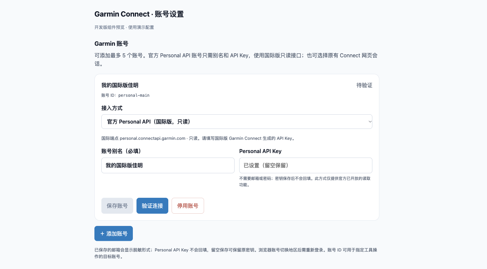

作者：李二牛 · 更新于 2026 年 10 月 22 日
想让 AI 分析佳明的睡眠、HRV 和训练数据，现在可以使用佳明官方的 Garmin Connect Personal API。你在官网生成 API Key，再交给本机插件；插件用它换取访问令牌、读取数据，整个接入过程不需要把佳明密码交给 AI。
这次国际版已经实测跑通：令牌交换、8 项 SDK 读取、5 项真实 MCP 工具读取全部通过。 下面以国际版为主，带你申请 Key，再连接 DeepSeek Harness 或其他 Agent。大陆入口与当前情况放在文末。完整测试报告
一、先弄清它能做什么
Personal API 用于个人读取自己的数据。官方当前公开 26 个 GET 数据接口，覆盖活动、步数、睡眠、心率、HRV、血氧、压力、身体电量等，也能下载原始活动文件。呼吸数据包含日汇总、睡眠等字段，不能等同于完整全天曲线。官方 FAQ · 接口文档
创建、删除课表和调整日历排期，仍使用插件单独提供的 Connect 网页会话（原有方式）；这些写操作和 Webhook 当前不在 Personal API 的公开范围内。

图 1：官方说明列出了申请步骤，以及 API Key 换取令牌的方法。
二、打开国际版密钥页面
在浏览器打开 国际版 Personal API Key 页面，使用你的国际版 Garmin 账号完成登录。也可以从 Garmin 官方说明中的链接进入。
进入后，设置列表中会出现 Personal API Key，右侧点击 Create Key。

图 2：国际版设置页有正式入口，点击 Create Key 开始申请。
三、阅读条款，先选 30 天
阅读 Garmin Connect Personal API Supplemental Terms，确认后点击 Accept。这把 Key 用来访问你自己的数据，请为个人使用的程序配置，不要分享给其他人。

图 3：国际版条款可以正常显示，阅读后自行决定是否接受。
下一步选择有效期。官方提供 30 天、90 天、180 天和一年；首次体验建议选 30 days，再点击 Create。本次国际 Key 的有效期为 2026 年 10 月 22 日至 11 月 21 日。

图 4：这里选择 30 days，然后点击 Create。
四、保存 Key，再检查 Active 状态
完整 API Key 只显示一次。 创建后先复制并妥善保存，再点击完成；如果丢失，需要删除旧 Key、重新生成。不要把 Key 发给 AI、粘贴到评论区或留在截图里。本文不展示一次性密钥画面。
保存后刷新页面，检查状态是否为 Active，以及到期日是否正确。下图是真实刷新后的管理页面，它显示密钥记录，不显示完整 Key。

图 5：状态为 Active，到期日为 2026 年 11 月 21 日；需要停止授权时可在这里 Delete。
五、在 DeepSeek Harness 里接入
以下设置属于本次源码开发版，npm 已发布的 0.1.18 尚不包含 Personal 接入。 正式版发布后可按新版本安装；现在体验需要使用 Personal 开发分支构建的插件，不能直接安装旧版 latest 代替。
已安装开发版后，按顺序操作：
- 打开 Harness 的插件页面，进入 Garmin Connect 的账号设置。
- 点击 + 添加账号，接入方式选择 官方 Personal API（国际版，只读）。
- 填写别名，例如“我的佳明国际版”；再填写官网刚生成的 API Key。
- 点击保存账号，随后点击验证连接；验证成功后即可开始查询。
新建 Personal 账号只需要别名和 API Key 两项，默认连接国际版。 不填邮箱、密码或地区，也不需要再次打开佳明登录页。Key 只在插件设置中输入，保存后不回填完整内容。

图 6：开发版账号表单组件预览：只填写别名和 API Key。使用演示配置渲染。
源码体验者可先构建本地安装包：
git clone --branch codex/personal-api --single-branch https://github.com/Likenttt/garmin-connect-plugin-for-dsh.git
cd garmin-connect-plugin-for-dsh
npm ci
npm run build
npm pack --ignore-scripts把生成的安装包路径换成你自己的绝对路径，安装到实际使用的 Harness profile：
npx @deepseek-ai/dsh plugin --profile web add /absolute/path/dsh-plugin-garmin-connect-0.1.19-dev.0.tgz重新加载插件或重启对应 Harness profile，再打开账号设置。已使用其他 profile 的用户，把示例中的 web 换成自己的 profile 名。
六、其他 Agent：用 MCP 接入
Codex、Claude Code 等支持 stdio MCP 的客户端，可以使用同一份已构建源码。先创建一个仅自己可读的 UTF-8 纯文本文件，内容只放 API Key，不加引号或 JSON 包装。macOS／Linux 文件权限设为 600，父目录设为 700；Windows 使用仅当前用户可访问的权限。这属于文件权限保护，不等于加密。
在客户端的 MCP 配置中添加以下内容，并替换两个绝对路径：
{
"mcpServers": {
"garmin-personal": {
"command": "node",
"args": ["/absolute/path/to/garmin-connect-plugin-for-dsh/lib/mcp.js"],
"env": {
"GARMIN_PROVIDER": "personal",
"GARMIN_ACCOUNT": "my-garmin",
"GARMIN_ALIAS": "我的佳明国际版",
"GARMIN_REGION": "global",
"GARMIN_PERSONAL_API_KEY_FILE": "/absolute/private/path/garmin-personal.key"
}
}
}
}GARMIN_ALIAS 是便于辨认的别名，GARMIN_ACCOUNT 是稳定的机器 ID；不要把两者当作邮箱。国际 Key 使用 global，请求 personal.connectapi.garmin.com。也可以通过客户端私密环境注入 GARMIN_PERSONAL_API_KEY，但不要把真实 Key 写进可分享的 JSON。此模式无需 GARMIN_USERNAME，也无需另外安装 SDK。
保存配置后，重新加载 MCP，确认 Garmin 工具出现，再让 Agent 执行：
“先读取我的 Garmin 账号资料确认连接，再查看昨天的 HRV、血氧和呼吸摘要；暂时不用制定计划。”
本次已验证 MCP 的 profile、活动、HRV、血氧、呼吸 5 项读取。呼吸返回的是每日摘要。先用小查询确认账号与日期，再逐步分析趋势；工具存在和读取成功要分别确认。
七、大陆账号：有入口，本次暂不可访问
大陆账号可在登录后直达 大陆 Personal API Key 页面。本次可以创建 30 天 Key，刷新后记录保留，但部分文案及条款显示为占位符。
使用大陆 Key 请求对应 personal.connectapi.garmin.cn，本轮换取令牌返回 HTTP 526／TOKEN_EXCHANGE_FAILED，没有取得 token，也没有继续读取健康数据。当前只能说大陆端点本次暂时无法访问，不能据此断言永久不支持。
国际用国际 Key，大陆用大陆 Key，分开保存、不跨区回退。MCP 保留 GARMIN_REGION=cn 配置；已经保存的大陆 Personal 账号会保留区域并显示暂不可访问提示。新建 Harness Personal 账号默认国际版，不能把大陆 Key 当国际 Key 填入。
最后补充：访问令牌最长有效 24 小时，且不超过 Key 的到期时间；过期后用 Key 重新获取，没有 refresh token。认证 FAQ
插件及独立维护的 connect-personal-api-ts 由李二牛开发，TS SDK 参考 Garmin 官方 Python 客户端，专注 Personal Key、token 与数据读取。本轮是源码开发验证，尚未发布对应 npm 升级版。
让 AI 分析数据，把密钥留在你控制的本机配置里。